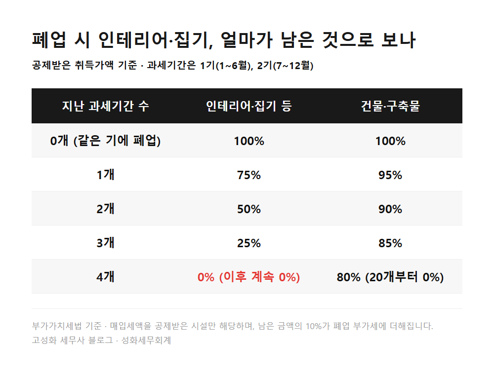
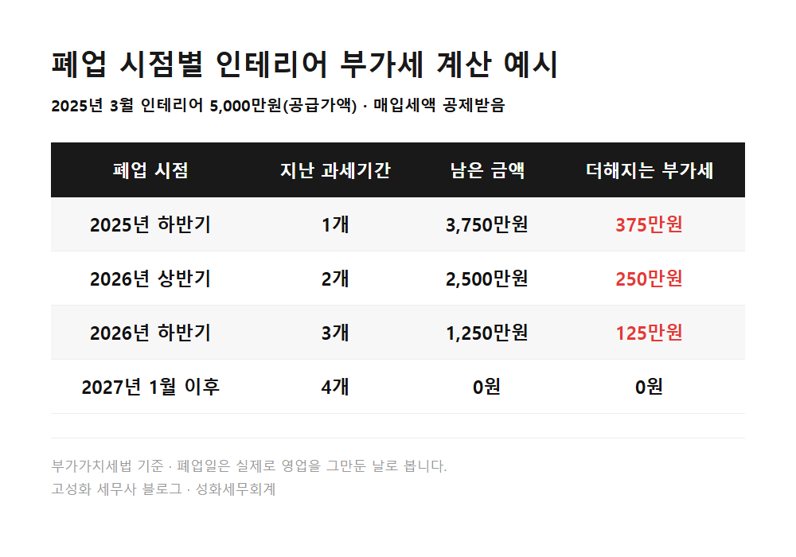
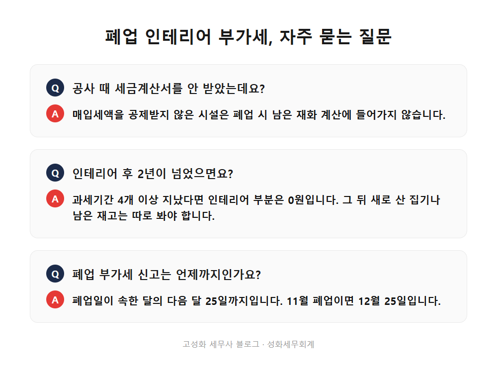

← 세무칼럼 목록
부가세·개인사업자


가게 폐업 인테리어 부가세, 2년 안에 접으면 얼마 나올까
125만원.
2025년 3월에 인테리어 5천만원(부가세 별도)을 들인 가게를 올해 11월에 접으면, 폐업 부가세 신고서에 이만큼이 더 붙습니다.
폐업할 때 남아 있는 인테리어와 집기는 사장님이 자기 자신에게 판 것으로 보고 부가세를 매기기 때문입니다.
이 금액은 반년(과세기간 하나)이 지날 때마다 4분의 1씩 줄어서, 과세기간 네 개가 지나면 0원이 됩니다.
이 글에서 다루는 내용
- 폐업할 때 남은 인테리어에 부가세가 붙는 이유
- 숫자로 확인해보겠습니다
- 넘길 때와 철거할 때, 처리 방법이 다릅니다
한눈에 보기



자주 묻는 질문
인테리어 공사 때 세금계산서를 안 받았는데요, 이것도 계산하나요?
매입세액을 공제받지 않은 시설은 폐업 시 남은 재화 계산에 들어가지 않습니다.
인테리어를 한 지 2년이 넘었으면 신경 안 써도 되나요?
과세기간 4개 이상 지났다면 인테리어 부분은 0원으로 계산됩니다. 다만 그 뒤에 새로 산 집기나 남은 재고가 있다면 따로 봐야 합니다.
폐업하면 부가세 신고는 언제까지인가요?
폐업일이 속한 달의 다음 달 25일까지입니다.
정리하면
폐업할 때 남은 인테리어와 집기는 내가 나에게 판 것으로 보고 부가세를 계산합니다.
공제받은 금액에서 반년마다 25%씩 줄어 2년이면 0원이 되고, 그 전에 접으면 남은 만큼 부가세가 붙습니다.
공식은 간단해 보여도, 실제로는 언제 무엇을 샀는지, 공제는 받았는지, 넘기는지 철거하는지까지 하나씩 맞춰봐야 숫자가 나옵니다.
이미 문을 닫고 신고기한이 지나셨더라도 늦지 않았습니다. 기한 후 신고를 한 달 안에 하면 무신고 가산세의 절반을 덜어줍니다.
인테리어 계약서와 폐업 예정일만 알려주시면 대략적인 금액부터 같이 맞춰보겠습니다.
본문 전체와 근거 조문은 블로그에서 확인하실 수 있습니다.